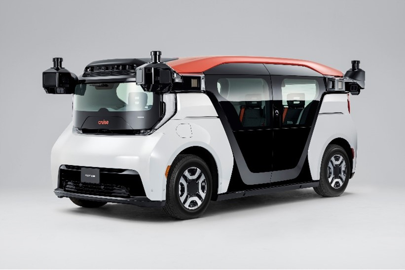

|
Jaime A. Romero I'm a graduate student at the University of Pennsylvania GRASP Lab, pursuing my Master's in Robotics. I'm passionate about bringing intelligent robotic systems—drones and humanoids—into households to work safely alongside people. Previously, I worked at General Motors on autonomous vehicle fleet systems and electric vehicle components. I completed my B.S. in Mechanical Engineering with a minor in Robotics at Carnegie Mellon University. |

|
Research InterestsI'm focused on building safe, intelligent robotic systems for everyday environments. My work combines:
|
Projects |

|
Nystag VR: Digital HINTS Exam Assessment
Jaime A. Romero Nystag LLC, 2024–2025 Developed a Unity-based VR system that replicates the HINTS neurological exam to evaluate eye movement for diagnostic purposes. Conducted market research and customer discovery through CMU I-Corps program to validate clinical applications. |
|  |
Autonomous Vehicle Fleet Management System
Jaime A. Romero General Motors, 2024–2025 Built an in-house mobile fleet management system reducing routing and monitoring task times by ~80% and increasing data diversity by 13%. Deployed an image classification model (97% sensitivity, 96% specificity) for obstruction detection, improving fleet collection efficiency by ~6,800 hours/year. |

|
Autonomous Pothole Filling Robot
Jaime A. Romero CMU Senior Capstone, Spring 2023 Trained YOLOv5 object recognition model for road markings and defects (potholes, manhole covers, traffic cones). Developed a self-labeling pipeline with human-in-the-loop supervision to create the largest open-source pothole dataset. Designed integrated system architecture for autonomous navigation and pothole filling. |

|
Social Navigation Test Bench
Jaime A. Romero CMU BIG Robotics Lab, Summer 2022 Designed evolutionary-learning-based algorithms for agent demographic selection in crowd simulation. Modeled pedestrian movement patterns using statistical analysis to improve robot navigation in human environments. |
Experience
Autonomous Vehicles Fleet Systems SWE
Hydraulic Controls Group Product Engineer
Electric Motors Intern
Research Assistant |
Education
University of Pennsylvania
Carnegie Mellon University Relevant Coursework: Deep Reinforcement Learning, Graph Neural Networks, Linear Controls, Machine Learning, Machine Perception, Physical Intelligence |
Technical Skills
Programming: Python, C++, MATLAB, SQL, Linux |
|
Last updated: January 2025 | Design from Jon Barron's website |